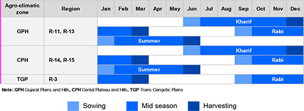
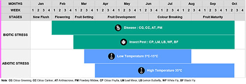
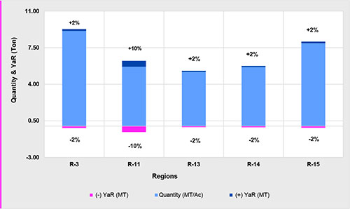
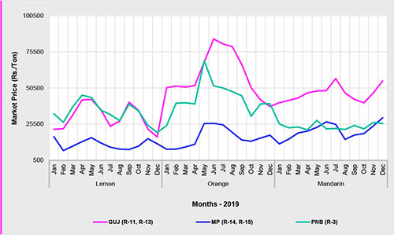
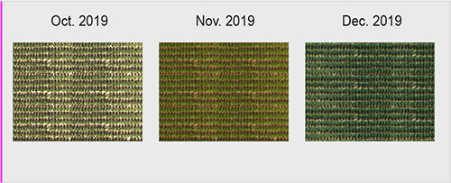
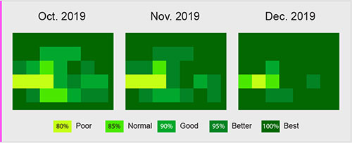
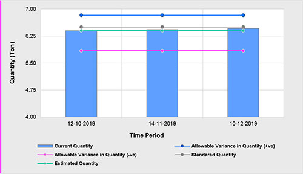
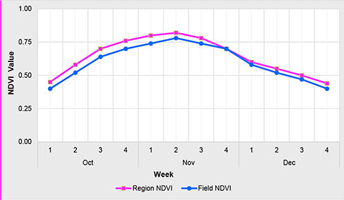

Potato is the largest non-cereal food crop worldwide and ranked as the world's fourth most important food crop after rice, wheat, and maize. In India, it is grown on about 2.11 lakh ha area with a production of 43.4 metric tonnes. Uttar Pradesh stands first in the area and production of potatoes followed by West Bengal. Other major growing states are Himachal Pradesh, Punjab, Madhya Pradesh, Gujarat, Maharashtra, Karnataka, Bihar, and Assam.
| HSN Code | 08055000 |
|---|---|
| Variety | Lime- Kagzi lime |
| Grade | Grade-I (Band-III) | Minimum Lot Size | 5.00 Tons |
| Bid Window Termination | 48 Hrs |
| Trading Hours | 48 Hrs |
| Contract Months |
The seasonal details are depicted in the calendar by their agroclimatic zones
It is a real-time tool that tracks and forecasts stresses and their severity by commodity, variety and phenophase. The DCC helps estimate crop health, yield and risk at various temporal and geo-spatial levels. DCC also helps in customised monitoring, alert generation and advisory activities.
NOTE: BW Bacterial Wilt, SR Soft Rot, BS Black Scurf, LB Late Blight, LCV Leaf Curl Virus, WG White Grub, AP Aphids, CW Cut Worms, PTM Potato Tuber Moth
The fluctuation/risk in yield or productivity varies from region to region. The region-wise variation on the yield is depicted in the graph below.
The monthly fluctuations in price for different benchmark markets are shown below.
Field Photo provides the visual representation of a field periodically.
Tool that provides a Spectral Index(SI) analysis of individual fields to ground-truth indices. It is standarised across time-periods for quick visual interpretation.
Real-time estimation of yield at various stages of crop growth, based on field monitoring of plant health and detection of stress.
Spectral Index (SI) comparison of field versus regional indices across commodity, variety and phenophase.
Tons (T)
| Region ID | State | Production | Risk Free Production | Available Production | Available Risk Free Production |
|---|---|---|---|---|---|
| R-4 | Uttar Pradesh | 28,07,631 | 26,89,915 | 1,40,382 | 1,34,496 |
| R-5 | Uttar Pradesh | 15,95,820 | 14,18,285 | 79,791 | 70,914 |
| R-13 | Gujarat | 10,61,674 | 10,36,698 | 53,084 | 51,835 |
| R-11 | Uttar Pradesh | 10,85,501 | 8,85,474 | 54,275 | 44,274 |
| R-20 | Uttar Pradesh | 7,54,109 | 6,98,333 | 37,705 | 34,917 |
| R-25 | Bihar | 3,55,997 | 3,55,666 | 17,900 | 17,783 |
| R-10 | Punjab | 3,25,074 | 3,19,957 | 16,254 | 15,998 |
| R-1 | Haryana | 2,09,003 | 2,01,117 | 10,450 | 10,056 |
| R-6 | Gujarat | 1,91,879 | 1,83,259 | 9,594 | 9,163 |
| R-24 | Madhya Pradesh | 1,48,006 | 1,36,474 | 7,400 | 6,824 |
| R-18 | Gujarat | 85,474 | 77,486 | 4,274 | 3,874 |
| Agro-climatic zone | State | Region ID | Major Districts | Varieties |
|---|---|---|---|---|
| Trans-Gangetic Plains (TGP) | Punjab | R-10 | Amritsar, Hoshiarpur, Jalandhar, Kapurthala | Kufri (Anand,Arun, Badshah, Chipsona-1, Chipsona-2, Chipsona-3, Pushkar, Sadabahar, Sutlej, Surya, Jyoti, Garima, Gaurav, Ashoka, Chandramukhi, Jawahar, Khyati, Pukhraj) |
| Haryana | R-01 | Karnal, Kurushetra | ||
| Upper Gangetic Plains (UGP) | Uttar Pradesh | R-04 | Aligarh, Etah, Firozabad, Hathras | |
| Uttar Pradesh | R-05 | Etah, Farrukhabad, Firozabad, Mainpuri | ||
| Uttar Pradesh | R-11 | Farrukhabad, Hardoi | ||
| Uttar Pradesh | R-20 | Barabanki, Lucknow | ||
| Gujarat Plains & Hills (GPH) | Gujarat | R-13 | Bana Kantha | |
| Gujarat | R-6 | Banas Kantha, Mahesana | ||
| Gujarat | R-18 | Anand, Kheda | ||
| Middle Gangetic Plains (MGP) | Bihar | R-25 | Gopalganj, Muzaffarpur, Purbi Champaran, Saran | |
| Central Plateau & Hills (CPH) | Madhya Pradesh | R-24 | Shajapur |
| No. | Primary Tradable Parameters | Grade-1 | Grade-2 | Grade-3 |
|---|---|---|---|---|
| I | Size (mm) - maximum diameter of the equatorial section | 55.01 - 70.00 | 25.01 - 55.00 | ≤ 25.00 |
| No. | Secondary Tradable Parameters | Brand-I | Brand-II | Brand-III |
|---|---|---|---|---|
| I | Defects (% by count) | |||
| (i) Cracks/cut (5 mm to 20mm) | 0.00 - 5.00 | 5.01 - 10.00 | > 10.00 | |
| (ii) Greening (1-3 sq cm of total surface area) | 0.00 - 2.00 | 2.01 - 3.00 | > 3.00 | |
| (iii) Holes | 0.00 - 1.00 | 1.01 - 2.00 | > 2.00 | |
| (iv) Mechanical injury | 0.00 - 2.00 | 2.01 - 3.00 | > 3.00 | |